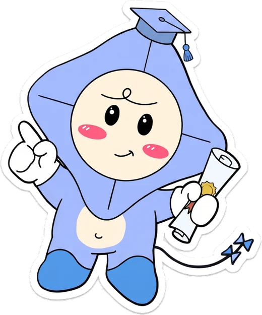

<!doctype html>
<html lang="km">
<head>
<meta charset="utf-8">
<meta name="viewport" content="width=device-width, initial-scale=1, viewport-fit=cover">
<title>KITEBud · Full report</title>
<link rel="icon" href="favicon.png" type="image/png" sizes="192x192">
<link rel="stylesheet" href="css/fonts.css">
<link rel="stylesheet" href="css/style.css">
<style>
.rwrap{max-width:920px;margin:0 auto;padding-block:32px 40px}
.jump{display:flex;flex-wrap:wrap;gap:8px}
.jump a{padding:6px 14px;border-radius:999px;background:var(--card);border:var(--bw) solid var(--edge);text-decoration:none;color:var(--ink);font-weight:500}
.major{display:flex;flex-direction:column;gap:22px;scroll-margin-top:90px}
.major + .major{border-top:2px dashed var(--line);padding-top:40px}
.sub{display:flex;flex-direction:column;gap:10px}
.sub h3{display:flex;gap:10px;align-items:baseline}
.sub h3 .label{color:var(--sky)}
.bigbars .bar{grid-template-columns:minmax(96px,150px) 1fr 3.4em;font-size:1rem}
.bigbars .bar__track{height:16px}
.careers{display:flex;flex-wrap:wrap;gap:8px}
.careers span{padding:6px 14px;border-radius:10px;background:var(--sky-soft);border:var(--bw) solid transparent} /* tags, not containers: soft pills like the results page words, so a long list does not become a wall of outlines */
.reasons{margin:0;padding:0;list-style:none;display:flex;flex-direction:column;gap:8px}
.reasons li{display:flex;gap:10px;align-items:flex-start;padding:10px 14px;background:var(--card);border-radius:10px;border:var(--bw) solid var(--edge)}
.reasons li::before{content:"✓";color:var(--ok);font-weight:700}
/* D. where to study it: a compact list (university name + the matching programs), in two columns on wide screens.
   The thin stem takes the match's rank colour (css/style.css section 17). */
.unilist{margin:0;padding:0;list-style:none;columns:2 280px;column-gap:28px}
.unilist li{break-inside:avoid;display:flex;flex-direction:column;gap:2px;padding:8px 0 8px 14px;margin-bottom:8px;border-left:3px solid var(--rank,var(--edge))}
.unilist b{font-weight:700}
.unilist__progs{font-size:.875rem;color:var(--muted)}
</style>
</head>
<body data-page="report">
<div id="kite-header"></div>
<main class="wrap"><div class="rwrap" id="app"></div></main>
<div id="kite-footer"></div>
<script src="js/config.js"></script>
<script src="js/questions.js"></script>
<script src="js/majors.js"></script>
<script src="js/major-profiles.js"></script>
<script src="js/universities.js"></script>
<script src="js/scoring.js"></script>
<script src="js/app.js"></script>
<script src="js/db.js"></script>
<script src="js/pay.js"></script>
<script>
(function(){
const K = window.KITE, D = window.KITE_DATA, app = document.getElementById("app");
const STEPS = [
  {id:"talk",km:"ពិភាក្សាលទ្ធផលនេះជាមួយគ្រួសារ ឬគ្រូរបស់អ្នក",en:"Talk these results through with your family or a teacher"},
  {id:"site",km:"បើកគេហទំព័រផ្លូវការរបស់សាកលវិទ្យាល័យ ២ យ៉ាងតិច ហើយពិនិត្យថ្លៃសិក្សា",en:"Open the official site of at least 2 universities and check the fees"},
  {id:"req",km:"កត់ត្រាលក្ខខណ្ឌចូលរៀន និងថ្ងៃផុតកំណត់ដាក់ពាក្យ",en:"Write down the entry requirements and application deadlines"},
  {id:"talkstudent",km:"សួរនិស្សិតឆ្នាំទី១ ឬទី២ ដែលកំពុងរៀនជំនាញនេះ",en:"Ask a first- or second-year student who studies this major"},
  {id:"sch",km:"ជ្រើសអាហារូបករណ៍មួយ ហើយរៀបចំឯកសារដាក់ពាក្យ",en:"Pick one scholarship and start gathering the documents"},
  {id:"bac",km:"ផ្ដោតលើមុខវិជ្ជាដែលសំខាន់សម្រាប់ជំនាញនេះ សម្រាប់ប្រឡងបាក់ឌុប",en:"Focus on the BacII subjects that matter most for this major"}
];
const safeUrl = u => /^https?:\/\//i.test(u||"") ? u : null; // only real web links
// a university offers a major when one of its programs (js/universities.js) lists that major: the only rule used, nothing invented
const offers = (u, id) => u.programs.some(p=>p.majors.includes(id));

function uniList(m){
  if(!D.UNIS.some(u=>offers(u, m.id))) return `<p class="banner banner--info">${K.t("យើងកំពុងពិនិត្យបញ្ជីសាកលវិទ្យាល័យសម្រាប់ជំនាញនេះនៅឡើយ។","We're still checking the university list for this major.")}</p>`;
  // only the name and the programs that match this major: no prices, scholarships, dates or links here
  return `<ul class="unilist">${D.UNIS.filter(u=>offers(u, m.id)).map(u=>{
    const progs = u.programs.filter(p=>p.majors.includes(m.id)).map(p=>K.esc(p.name));
    return `<li><b>${K.esc(K.t(u))}</b>${progs.length?`<span class="unilist__progs">${progs.join(" · ")}</span>`:""}</li>`;
  }).join("")}</ul>`;
}

function section(x, rank, S){
  const m = x.m;
  const sch = D.SCHOLARSHIPS.filter(s=>s.majors==="all"||s.majors.includes(m.id));
  const reasons = x.reasons.length ? x.reasons.map(r=>`<li>${K.t(r)}</li>`).join("") : `<li>${K.t("ចម្លើយរបស់អ្នកមានតុល្យភាពល្អ ក្នុងគ្រប់ផ្នែកទាំង ៤ សម្រាប់ជំនាញនេះ។","Your answers line up evenly with this major across all 4 categories.")}</li>`;
  const db = x.dealBreakers.map(id=>K.t(D.Q.B3.items.find(i=>i.id===id)));
  const jobs = m.jobs.map(id=>D.Q.A.jobs.find(j=>j.id===id)).filter(Boolean);
  const hasUnis = D.UNIS.some(u=>offers(u, m.id));
  const checks = (S.checks && S.checks[m.id]) || {};
  return `<section class="major" id="m-${m.id}" data-rank="${rank}" aria-labelledby="h-${m.id}">
    <div class="pass ${rank===1?"pass--gold":""}">
      <div class="pass__main"><div class="pass__band"><span>${K.t("ភាពសាកសមលេខ","Match #")}${K.n(rank)}</span><span>${S.id}</span></div>
      <h2 id="h-${m.id}" class="display">${K.t(m)}</h2></div>
      <div class="pass__stub"><span class="label">${K.t("សរុប","Overall")}</span>${K.flap(x.pct,"flap--lg")}</div>
    </div>

    <div class="grid g2">
      <div class="sub panel"><h3><span class="label">A</span>${K.t("ការបំបែកតាមផ្នែក","Breakdown")}</h3>${K.partBars(x.parts,"bigbars")}
        <p class="small muted">${K.t("សរុប = ","Overall = ")}${K.weightsLine()}</p></div>
      <div class="sub"><h3><span class="label">B</span>${K.t("ហេតុអ្វីបានជាសាកសម","Why it matched")}</h3><ul class="reasons">${reasons}</ul>
        ${db.length?`<p class="small muted">${K.t(`សម្គាល់៖ អ្នកបានជ្រើស «${db.join("», «")}» ដែលធ្វើឱ្យពិន្ទុចំណាប់អារម្មណ៍សម្រាប់ជំនាញនេះទាបជាងមុន។`,`Note: you ticked “${db.join("”, “")}”, which lowers this major's interest score.`)}</p>`:""}</div>
    </div>

    <div class="sub"><h3><span class="label">C</span>${K.t("ការងារដែលភ្ជាប់នឹងជំនាញនេះ","Jobs linked to this major")}</h3>
      <p class="small muted">${K.t("ពីបញ្ជីការងាររបស់យើង។ ជំនាញមួយមិនធានាការងារណាមួយឡើយ។","From our career list. A degree does not guarantee any job.")}</p>
      <div class="careers">${jobs.map(j=>`<span>${K.t(j)}</span>`).join("")}</div></div>

    <div class="sub"><h3><span class="label">D</span>${K.t("សាកលវិទ្យាល័យដែលមានជំនាញនេះ","Universities offering it")}</h3>
      <p class="small muted">${K.t("បង្ហាញតែកម្មវិធីថ្នាក់បរិញ្ញាបត្រប៉ុណ្ណោះ។","Bachelor's degree programs only.")}</p>
      <div id="u-${m.id}">${uniList(m)}</div>
      ${hasUnis?`<p class="small muted">${K.t("ព័ត៌មានអាចផ្លាស់ប្ដូរ — សូមពិនិត្យគេហទំព័រផ្លូវការ។","Info may change — check the official site.")} ${K.t("KITEBud មិនមានទំនាក់ទំនង ឬទទួលបានការគាំទ្រពីសាកលវិទ្យាល័យទាំងនេះទេ។ ព័ត៌មានយកចេញពីគេហទំព័រផ្លូវការរបស់ពួកគេ។","KITEBud is not affiliated with or endorsed by these universities. Information comes from their official websites.")}</p>`:""}
    </div>

    <div class="sub"><h3><span class="label">E</span>${K.t("អាហារូបករណ៍","Scholarships")}</h3>
      <div class="tablewrap"><table><thead><tr><th>${K.t("ឈ្មោះ","Name")}</th><th>${K.t("ថ្ងៃផុតកំណត់","Deadline")}</th><th>${K.t("តំណ","Link")}</th></tr></thead><tbody>
      ${sch.map(s=>`<tr><td>${K.t(s)}</td><td>${K.t(s.when)}</td><td>${safeUrl(s.url)?`<a href="${K.esc(safeUrl(s.url))}" target="_blank" rel="noopener">${K.t("បើក","Open")} ↗</a>`:"—"}</td></tr>`).join("")}
      </tbody></table></div>
    </div>

    <div class="sub panel"><h3><span class="label">F</span>${K.t("ជំហានបន្ទាប់របស់អ្នក","Your next steps")}</h3>
      <div>${STEPS.map(st=>`<label class="check"><input type="checkbox" data-check="${st.id}" data-m="${m.id}" ${checks[st.id]?"checked":""}><span>${K.t(st)}</span></label>`).join("")}</div>
    </div>
  </section>`;
}

function render(){
  const demo = K.isDemo(), S = K.state();
  if(!demo && !S.done){
    app.innerHTML = `<div class="panel stack" style="text-align:center;align-items:center"><h1 class="display">${K.t("មិនទាន់មានរបាយការណ៍","No report yet")}</h1><p class="muted">${K.t("បញ្ចប់តេស្ត ហើយដោះសោលទ្ធផលរបស់អ្នក ដើម្បីមើលរបាយការណ៍ពេញលេញ។","Finish the test and unlock your results to see the full report.")}</p><a class="btn btn--gold" href="assessment.html">${K.t("ទៅកាន់តេស្ត","Go to the test")}</a></div>`;
    return;
  }
  const R = K.score(S);
  // every unlocked major, even one that is no longer in the top 3 after a retake
  // (the demo and the showcase count every major as unlocked, so they show only the top 3)
  const open = (demo || K.SHOWCASE ? R.top : R.all).map((x,i)=>({x,rank:i+1})).filter(o=>K.unlocked(S,o.x.id));
  const topOpen = R.top.filter(x=>K.unlocked(S,x.id)).length;
  if(!open.length){
    app.innerHTML = `<div class="panel stack" style="text-align:center;align-items:center"><span style="font-size:2.4rem" aria-hidden="true">🔒</span><h1 class="display">${K.t("របាយការណ៍នៅតែចាក់សោ","Your report is still locked")}</h1><p class="muted">${K.PAYMENT ? K.t(K.PAY_LOCKED) : K.t("ជ្រើសកញ្ចប់ A ឬ B ដើម្បីដោះសោ។","Choose Package A or B to unlock it.")}</p><a class="btn btn--gold" href="results.html">${K.t("ត្រឡប់ទៅលទ្ធផល","Back to results")}</a></div>`;
    return;
  }
  app.innerHTML = `<div class="stack-lg">
    ${demo?`<div class="banner banner--info">${K.t("របាយការណ៍គំរូ — សិស្សប្រឌិត «ដារា»។","Sample report — fictional student “Dara”.")}</div>`:""}
    <div class="with-sticker page-band"><div class="stack" style="gap:8px"><span class="label">${K.t("របាយការណ៍ពេញលេញ","Full report")} · ${S.id}</span>
      <h1 class="display">${K.t("ផែនការហោះហើររបស់អ្នក","Your flight plan")}</h1>
      ${open.length>1?`<nav class="jump" aria-label="Majors">${open.map(o=>`<a href="#m-${o.x.m.id}" data-rank="${o.rank}">${K.n(o.rank)}. ${K.t(o.x.m)}</a>`).join("")}</nav>`:""}
      ${!demo && topOpen<3?`<p class="small muted">${K.t(`អ្នកបានដោះសោ ${K.n(topOpen)} ក្នុងចំណោមជំនាញកំពូលទាំង ៣។`,`You've unlocked ${topOpen} of your top 3 majors.`)} <a href="checkout.html" id="upB">${K.t("ដំឡើងទៅកញ្ចប់ B ដើម្បីមើលទាំង ៣","Upgrade to Package B to see all 3")}</a></p>`:""}
    </div></div>
    ${open.map(o=>section(o.x,o.rank,S)).join("")}
    <a class="btn" href="results.html">← ${K.t("ត្រឡប់ទៅលទ្ធផល","Back to results")}</a>
  </div>`;
  const up = document.getElementById("upB"); if(up) up.onclick = ()=>K.update(s=>s.pkg="B");
  app.querySelectorAll("[data-check]").forEach(el=>el.onchange=()=>{
    if(demo) return;
    K.update(s=>{ s.checks = s.checks||{}; s.checks[el.dataset.m] = s.checks[el.dataset.m]||{}; s.checks[el.dataset.m][el.dataset.check] = el.checked; });
  });
}
document.addEventListener("DOMContentLoaded", render);
document.addEventListener("kite:lang", render);
})();
</script>
</body>
</html>
